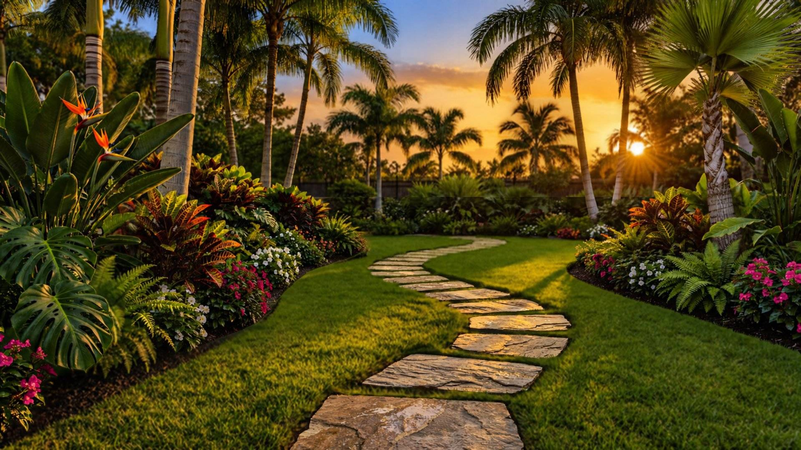
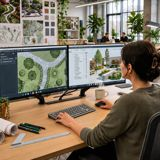
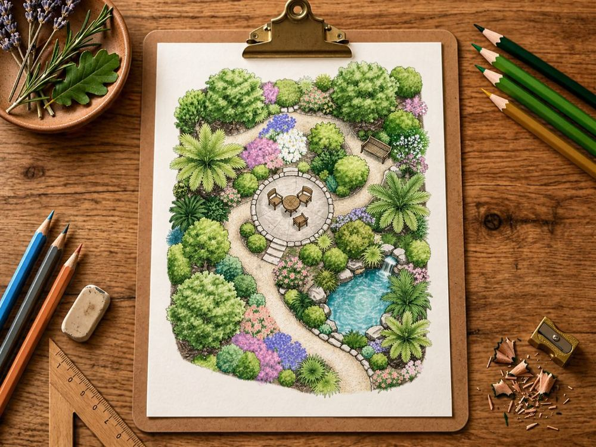
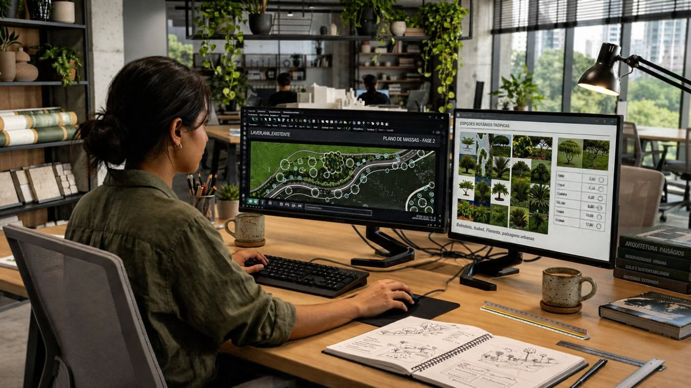
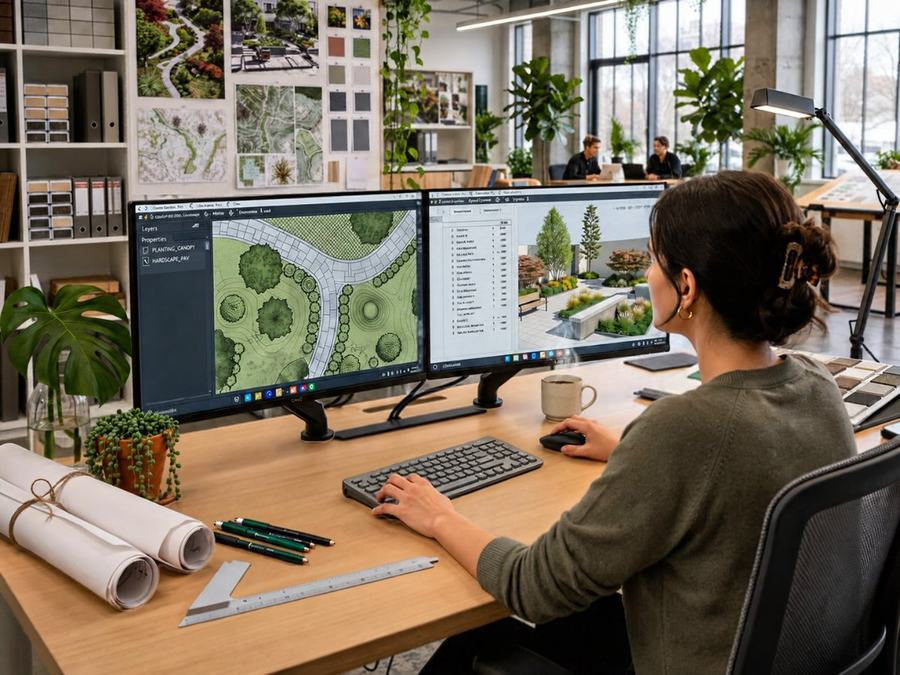
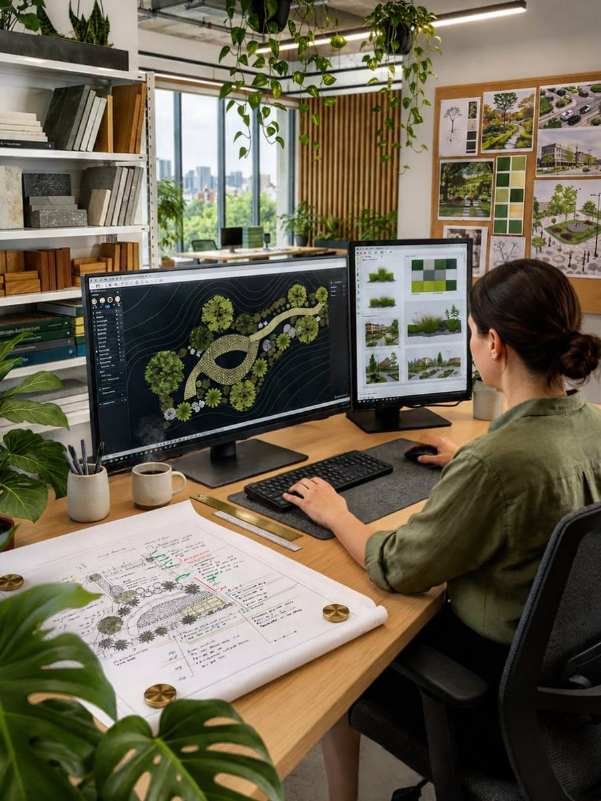

Natureza desenhada para o seu jeito de viver.
Criamos jardins que unem beleza, funcionalidade e cuidado. Cada projeto nasce no papel, ganha precisão no AutoCAD e floresce no seu espaço.


Projetos em AutoCADPrecisão em cada detalheUm bom jardim não é só bonito: ele conversa com a arquitetura, respeita a luz e o clima, e acompanha a rotina de quem vive ali.
Por isso, cada trabalho da JS Paisagismo começa com escuta. Entendemos o seu espaço, o seu estilo e o tempo que você quer dedicar às plantas antes de desenhar qualquer canteiro.
O resultado são áreas verdes que valorizam o imóvel, criam lugares de convivência e continuam bonitas com o passar das estações.
Do traço ao jardim pronto
Atendemos residências, condomínios e espaços comerciais, cuidando de todas as etapas para que você só aproveite o resultado.
- 01
Projeto paisagístico
Estudo do espaço, escolha das espécies e desenho completo do jardim, desenvolvido em AutoCAD com plantas claras e precisas.

- 02
Implantação
Preparo do solo, plantio, gramado e acabamentos, executados com cuidado para o jardim sair do papel exatamente como foi pensado.

- 03
Manutenção
Podas, adubação e cuidados periódicos para manter o jardim saudável e bonito o ano inteiro.

- 04
Vasos e jardins verticais
Varandas, sacadas e áreas compactas ganham vida com vasos, floreiras e paredes verdes.

Seu jardim, planejado no AutoCAD
Antes de qualquer muda ir para a terra, o projeto é modelado no computador. Assim você visualiza o resultado com antecedência e a execução acontece com precisão, sem improvisos.
- Planta baixa com a posição de cada espécie, caminhos e canteiros
- Medidas exatas que facilitam o orçamento e a execução
- Projeto integrado à arquitetura da casa ou do empreendimento


Ideias para o seu espaço
Grandes ou pequenos, todos os espaços podem ganhar verde. Veja alguns estilos que podem inspirar o seu projeto.
Simples, claro e do seu jeito
Um processo transparente, para você saber exatamente o que acontece em cada etapa.
Começar agoraConversa inicial
Você conta o que imagina e envia fotos do espaço. Entendemos seu estilo, sua rotina e seu orçamento.
Visita técnica
Avaliamos no local a luz, o solo, as medidas e a arquitetura.
Projeto em AutoCAD
Desenvolvemos o projeto com as espécies escolhidas e apresentamos a proposta detalhada.
Execução e cuidado
Implantamos o jardim e orientamos os cuidados, com a opção de manutenção periódica.

Técnica de escritório, mão na terra
A JS Paisagismo une o planejamento técnico do projeto ao conhecimento prático de quem acompanha o jardim de perto. Essa combinação garante projetos bonitos no papel e viáveis na prática.
Trabalhamos com atenção a cada detalhe e com respeito ao seu espaço, do primeiro esboço à última muda plantada.
Acompanhe nossos jardins no dia a dia
Projetos, bastidores e dicas de cuidado em @js.paisagismo.

Vamos criar o seu jardim?
Conte um pouco sobre o seu espaço e o que você imagina. Respondemos com carinho e sem compromisso.